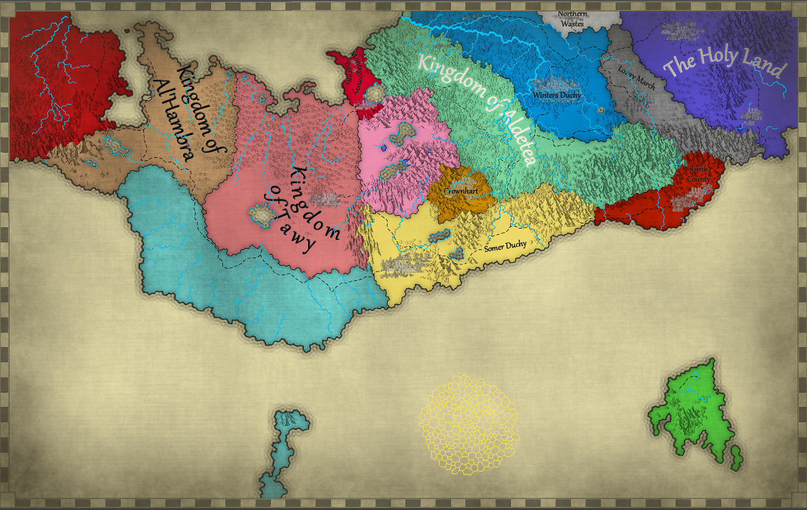

Dwarves
Inventive clans known for architecture, crystal communication, luxury industries, and strong ancestral traditions.
A Federation archive for the worldbuilding, cultures, magic, guilds, and characters of Alterra.
Each culture page records ancestry, history, physicality, naming conventions, and archetypes useful for storytelling or tabletop play.

Inventive clans known for architecture, crystal communication, luxury industries, and strong ancestral traditions.
Hardy peoples shaped by wasteland survival, tribal bloodlines, the Orc Wars, and their complicated place in Federation society.
Former seafarers and record keepers whose ledgers preserve the ancient world and guide expeditions into forgotten places.
Dragon-descended people of Highwind associated with elemental energy, scale broods, aerial cities, and the Dragonguard.
Adaptable organizers and diplomats whose flexible identities helped shape the Federation after the Cataclysm.
Oceanic peoples of song, memory, emotional honesty, and hidden coral cities beyond the western storms.